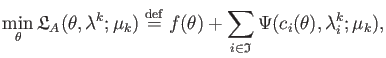
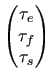
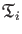

Next: The base dispersion models Up: Introduction to relaxation dispersion Previous: Implemented models Contents Index
Except for `R2eff' and `No Rex', all models can be fit to clusterings of spins, or spin blocks. The models are described in more detail below and summarised in Table 11.1. The parameters of the models and of relaxation dispersion in general are given in Table 15.5.
For a number of models, the off-resonance
R1 value can be optimised.
Normally the off-resonance models will use fixed experimental
R1 values for optimisation.
However if the experimental values are not loaded, then the
R1 values will be automatically optimised.
For finer control of this optimisation behaviour, see the relax_disp.r1_fit user function (page ![[*]](crossref.png) ).
The models which support off-resonance
R1 fitting include:
).
The models which support off-resonance
R1 fitting include:
In the future, support for off-resonance effects in the CPMG experiments is planned (see section 11.10 on page ).
|
|
|||||
| Model name | Solution | Sites | Parameters | Restrictions | Reference |
|
|
|||||
| Experiment independent | |||||
| R2eff | - | - | {R2eff, ... } | Fixed relaxation time period | - |
| R2eff | - | - | {R2eff, I0, ... } | Variable relaxation time period | - |
| No Rex | Closed | 1 | {R20, ... } | - | - |
| CPMG-type | |||||
| LM63 | Analytic | 2 | {R20,..., Φex, kex} | Fast exchange | Luz and Meiboom (1963) |
| LM63 3-site | Analytic | 3 | {R20,..., Φex, B, kB, Φex, C, kC} | Fast exchange, pA > pB and | Luz and Meiboom (1963) |
| pA > pC | |||||
| CR72 | Analytic | 2 | {R20,..., pA, Δω, kex} | pA > pB, not very slow exchange | Carver and Richards (1972) |
| CR72 full | Analytic | 2 | {R2A0, R2B0,..., pA, Δω, kex} | pA > pB, not very slow exchange | Carver and Richards (1972) |
| IT99 | Analytic | 2 | {R20,..., pA, Δω, τex} |
pA |
Ishima and Torchia (1999) |
| TSMFK01 | Analytic | 2 | {R2A0,..., Δω, kAB} |
pA |
Tollinger et al. (2001) |
| B14 | Analytic | 2 | {R20,..., pA, Δω, kex} | pA > pB, | Baldwin (2014) |
| B14 full | Analytic | 2 | {R2A0, R2B0,..., pA, Δω, kex} | pA > pB, | Baldwin (2014) |
| NS CPMG 2-site expanded | Numeric | 2 | {R20,..., pA, Δω, kex} | pA > pB | Tollinger et al. (2001) |
| NS CPMG 2-site 3D | Numeric | 2 | {R20,..., pA, Δω, kex} | pA > pB | - |
| NS CPMG 2-site 3D full | Numeric | 2 | {R2A0, R2B0,..., pA, Δω, kex} | pA > pB | - |
| NS CPMG 2-site star | Numeric | 2 | {R20,..., pA, Δω, kex} | pA > pB | - |
| NS CPMG 2-site star full | Numeric | 2 | {R2A0, R2B0,..., pA, Δω, kex} | pA > pB | - |
| MMQ CPMG-type | |||||
| MMQ CR72 | Analytic | 2 | {R20,..., pA, Δω, ΔωH, kex} | pA > pB | Korzhnev et al. (2004a) |
| NS MMQ 2-site | Numeric | 2 | {R20,..., pA, Δω, ΔωH, kex} | pA > pB | Korzhnev et al. (2005a) |
| NS MMQ 3-site linear | Numeric | 3 | {R20,..., pA, pB, ΔωAB, ΔωBC, | pA > pB and pB > pC | Korzhnev et al. (2005a) |
| ΔωHAB, ΔωHBC, kexAB, kexBC} | |||||
| NS MMQ 3-site | Numeric | 3 | {R20,..., pA, pB, ΔωAB, ΔωBC, | pA > pB and pB > pC | Korzhnev et al. (2005a) |
| ΔωHAB, ΔωHBC, kexAB, kexBC, kexAC} | |||||
| R1ρ-type | |||||
| M61 | Analytic | 2 | {R1ρ',..., Φex, kex} | Fast exchange, on-resonance, | Meiboom (1961) |
| R1 = R2 | |||||
| DPL94 | Analytic | 2 | {R1ρ',..., Φex, kex} | Fast exchange | Davis et al. (1994) |
| M61 skew | Analytic | 2 | {R1ρ',..., pA, Δω, kex} |
pA |
Meiboom (1961) |
| TP02 | Analytic | 2 | {R1ρ',..., pA, Δω, kex} |
pA |
Trott and Palmer (2002) |
| TAP03 | Analytic | 2 | {R1ρ',..., pA, Δω, kex} | Weak condition of
pA |
Trott et al. (2003) |
| TP0411.1 | Analytic | N | {R1ρ',..., p1,..., pN,, k12,... k1N} | One site dominant | Trott and Palmer (2004) |
| MP05 | Analytic | 2 | {R1ρ',..., pA, Δω, kex} | pA > pB | Miloushev and Palmer (2005) |
| BK13 | Analytic | 2 | {R20,..., pA, Δω, kex} | pA > pB, | Baldwin and Kay (2013) |
| BK13 full | Analytic | 2 | {R2A0, R2B0,..., pA, Δω, kex} | pA > pB, | Baldwin and Kay (2013) |
| NS R1rho 2-site | Numeric | 2 | {R1ρ',..., pA, Δω, kex} | pA > pB | - |
| NS R1rho 3-site linear | Numeric | 3 | {R1ρ',..., pA, pB, ΔωAB, ΔωBC, | pA > pB and pA > pC | - |
| kexAB, kexBC} | |||||
| NS R1rho 3-site | Numeric | 3 | {R1ρ',..., pA, pB, ΔωAB, ΔωBC, | pA > pB and pA > pC | - |
| kexAB, kexBC, kexAC} | |||||
|
|
|||||
|
|
|||
| Parameter | Equation | Description | Units |
|
νCPMG |
1/(4τCPMG) | CPMG frequency | Hz |
| τCPMG | 1/(4νCPMG) | Delay between CPMG π pulses | s |
| Trelax | - | The relaxation delay period | s |
| I0 | - | Reference peak intensity when Trelax is zero | - |
| I1 | - | Peak intensity for a given νCPMG or spin-lock field strength ω1 | - |
| R20 | - | R2 relaxation rate in the absence of exchange | rad.s-1 |
| R2A0 | - | R2 relaxation rate for state A in the absence of exchange | rad.s-1 |
| R2B0 | - | R2 relaxation rate for state B in the absence of exchange | rad.s-1 |
| R1ρ' | - | R1ρ relaxation rate in the absence of exchange | rad.s-1 |
| - ωrf | The average resonance offset in the rotating frame | rad.s-1 | |
| ΩA | ωA - ωrf | The resonance offset in the rotating frame for state A | rad.s-1 |
| ΩB | ωB - ωrf | The resonance offset in the rotating frame for state B | rad.s-1 |
| ΩC | ωC - ωrf | The resonance offset in the rotating frame for state C | rad.s-1 |
| ωA | - | The Larmor frequency of the spin in state A | rad.s-1 |
| ωB | - | The Larmor frequency of the spin in state B | rad.s-1 |
| ωC | - | The Larmor frequency of the spin in state C | rad.s-1 |
| ωHA | - | The proton Larmor frequency of the spin in state A (for MMQ data) | rad.s-1 |
| ωHB | - | The proton Larmor frequency of the spin in state B (for MMQ data) | rad.s-1 |
| ωHC | - | The proton Larmor frequency of the spin in state C (for MMQ data) | rad.s-1 |
| pAωA + pBωB | The population averaged Larmor frequency of the spin | rad.s-1 | |
| ω1 | - | Spin-lock field strength, i.e. the amplitude of the rf field | rad.s-1 |
| ωe |
|
Effective field in the rotating frame | rad.s-1 |
| ωrf | - | Spin-lock offset, i.e. the frequency of the rf field | rad.s-1 |
| θ |
arctan |
Rotating frame tilt angle | rad |
| kAB | pBkex | The forward exchange rate from state A to state B (2-site) | rad.s-1 |
| kBA | pAkex | The reverse exchange rate from state B to state A (2-site) | rad.s-1 |
| kAB | pBkexAB | The forward exchange rate from state A to state B (3-site) | rad.s-1 |
| kBA | pAkexAB | The reverse exchange rate from state B to state A (3-site) | rad.s-1 |
| kBC | pCkexBC | The forward exchange rate from state B to state C (3-site) | rad.s-1 |
| kCB | pBkexBC | The reverse exchange rate from state C to state B (3-site) | rad.s-1 |
| kAC | pCkexAC | The forward exchange rate from state A to state C (3-site) | rad.s-1 |
| kCA | pAkexAC | The reverse exchange rate from state C to state A (3-site) | rad.s-1 |
| kex | 1/τex | Chemical exchange rate constant | rad.s-1 |
| kexAB | kAB + kBA | Chemical exchange rate constant between sites A and B | rad.s-1 |
| kexBC | kBC + kCB | Chemical exchange rate constant between sites B and C | rad.s-1 |
| kexAC | kAC + kCA | Chemical exchange rate constant between sites A and C | rad.s-1 |
| kB |  kexAB | Approximate chemical exchange rate constant between sites A and B | rad.s-1 |
| kC | kexAC | Approximate chemical exchange rate constant between sites A and C | rad.s-1 |
| τex | 1/kex | Time of exchange | s.rad-1 |
| pA | - | Population of state A | - |
| pB | 1 - pA | Population of state B (2-site) | - |
| pB | 1 - pA - pC | Population of state B (3-site) | - |
| pC | 1 - pA - pB | Population of state C (3-site) | - |
| Δω | ωB - ωA | Chemical shift difference between sites A and B (2-site) | rad.s-1 (stored as ppm) |
| ΔωAB | ωB - ωA | Chemical shift difference between sites A and B (3-site) | rad.s-1 (stored as ppm) |
| ΔωBC | ωC - ωB | Chemical shift difference between sites B and C (3-site) | rad.s-1 (stored as ppm) |
| ΔωAC | ΔωAB + ΔωBC | Chemical shift difference between sites A and C (3-site) | rad.s-1 (stored as ppm) |
| ΔωH | ωHB - ωHA | Proton chemical shift difference between sites A and B (2-site) | rad.s-1 (stored as ppm) |
| ΔωHAB | ωHB - ωHA | Proton chemical shift difference between sites A and B (3-site) | rad.s-1 (stored as ppm) |
| ΔωHBC | ωHC - ωHB | Proton chemical shift difference between sites B and C (3-site) | rad.s-1 (stored as ppm) |
| ΔωHAC | ΔωHAB + ΔωHBC | Proton chemical shift difference between sites A and C (3-site) | rad.s-1 (stored as ppm) |
| Φex | pApBΔω2 | Fast exchange factor | rad2.s-2 (stored as ppm2) |
| Φex, B | See 11.20a on page |
Fast exchange factor between sites A and B | rad2.s-2 (stored as ppm2) |
| Φex, C | See 11.20b on page |
Fast exchange factor between sites A and C | rad2.s-2 (stored as ppm2) |